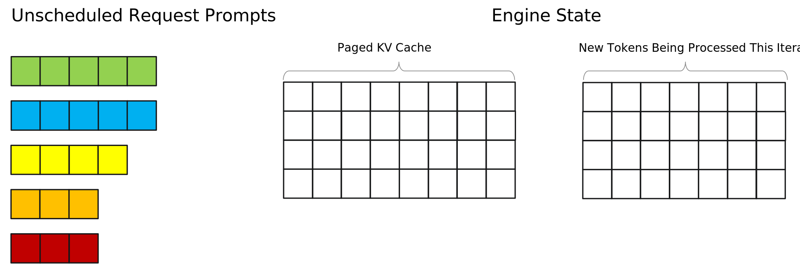
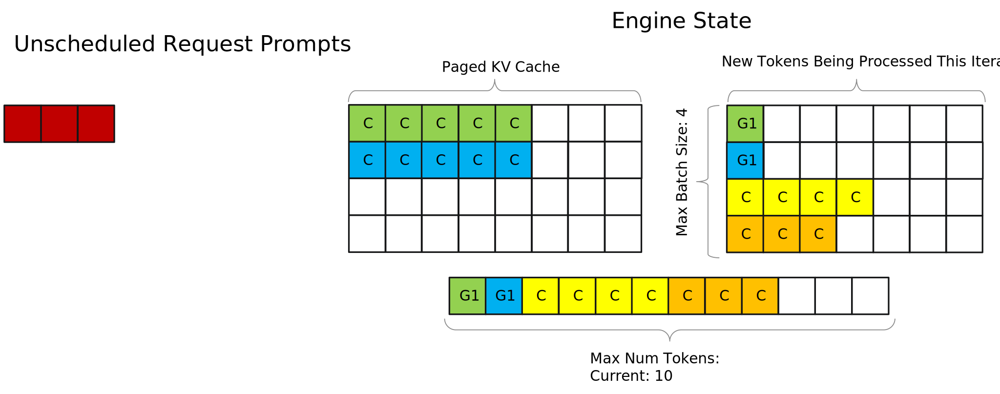
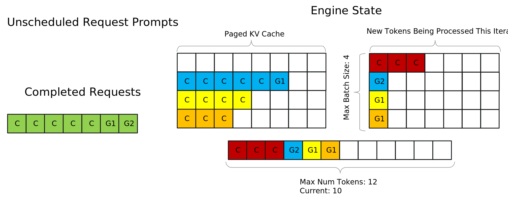
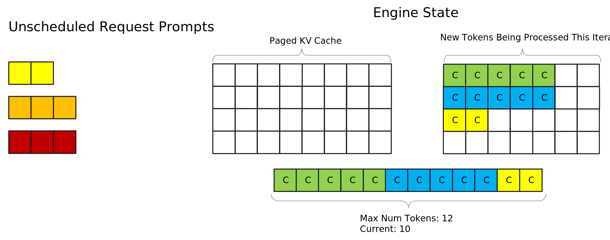

Tuning Max Batch Size and Max Num Tokens#
One of TensorRT-LLM’s key features is it’s inflight batching scheduler and runtime that handles simultaneously scheduling and executing requests in both context and generation phases. Max-Num tokens, in conjunction with Max-Batch size dictates how and when the scheduler schedules new and current requests, and understanding their role and how to tune them can provide significant performance benefits.
Disclaimer: While performance numbers shown here are real, they are only for demonstration purposes. Differences in environment, SKU, interconnect, and workload can all significantly affect performance and lead to your results differing from what is shown here.
Understanding the TensorRT-LLM scheduler#
This section visualizes how TensorRT-LLM schedules requests based on max-batch size and max-num tokens. The example starts out with a newly initialized engine as well as a few unscheduled requests that have come in. For the sake of this example, toy values are set to max batch size = 4 and max num tokens = 12. Each square block represents a token, and its color represents which request it belongs to.

Now the scheduler takes the first two requests, Request 1 and Request 2, and schedules them to execute the context phase. However, it cannot schedule any more requests because the prompts of the first two requests had 5 tokens each, leaving a budget of 2 tokens due to the max num tokens limit. Since all remaining requests have more than 2 prompt tokens none of them can be scheduled (context chunking can help in this situation, see the paged context attention section below). The tokens are marked with a “C” on them to represent that they are prompt tokens that were processed in the context phase.
Note: The tokens for different requests are shown on different rows simply for visualization purposes and are not representative of actual memory layouts

Now the engine runs an iteration of execution, completing the context phases for both of the scheduled requests. After it is done, the kv-cache of the prompts for both requests have been created and the first token has been generated. Tokens that were generated are marked with “G(n)” - for example a token marked “G1” represents that it is the first token generated for its request.
TRT-LLM prioritizes scheduling requests in generation phase first so the two generated tokens are queued to be processed in the next iteration. Now, since the two previously scheduled requests have entered generation phase and only take up two tokens out of the max num token budget of 12, the scheduler is able to schedule two additional requests, Request 3 and Request 4. It cannot schedule the last request, Request 5, even though there is space for it in the max num tokens budget because of the max batch size limit of 4.

After the next iteration of execution, the second tokens for Requests 1 and 2 have been generated, and the first tokens for Request 3 and 4 have been generated. Lets say that G2 that was generated for Request 1 is the stop token, signifying that Request 1 is completed. In this case the scheduler would evict Request 1 before performing another execution iteration and prepare to return it to the user. This eviction puts the state of the engine below the max batch size limit and allows Request 5 to be scheduled.
Another thing to note is that G1 that was generated for Request 2 has been added to the kv-cache for request 2, representing how kv-cache for a request grows as more and more tokens are generated.

Overall, the max batch size and max num tokens limits play a key part in deciding when requests are actually executed, and tuning them can have significant impacts on throughput numbers as well as how the engine balances previously scheduled requests in generation phase with context phase on new requests
Note: This presents a simplified visualization of the scheduler to highlight how max batch size and max num tokens affect it. The scheduler also considers things like amount of free memory available to be used for kv-cache and has other configurable options that can affect its behavior. See the Runtime Flags of the Additional Options page for more on this.
Tuning Max Batch Size#
It is important to set the max batch size large enough that it doesn’t bottleneck the scheduling of new requests. Due to this it’s recommended to test additional values of max batch size for your workload. The default value is 2048. Powers of 2 are good initial values to sweep through.
How to change Max Batch Size#
You can specify the max batch size in the build config.
build_config = BuildConfig(
max_batch_size=512
)
If you are using the CLI flow for building engines pass --max_batch_size <int> to trtllm-build to tune max batch size.
Tuning Case Study#
Continuing with our case study of Llama-3.3-70B on 4 H100s, we pick up where left off in the previous section (building an engine with multiple profiles, gemm plugin, paged context attention, and reduce fusion enabled). Sweeping across max batch sizes of 64, 512, and the default 2048 produced the following results
Metric |
Max Batch Size 64 |
Max Batch Size 512 |
Max Batch Size 2048 |
|---|---|---|---|
Token Throughput (tokens/sec) |
1944.3031 |
2466.7933 |
2044.2628 |
Request Throughput (req/sec) |
0.9494 |
1.2045 |
0.9982 |
Average Time To First Token (ms) |
145.7607 |
147.7876 |
146.6628 |
Average Inter-Token Latency (ms) |
14.6475 |
14.6554 |
14.4493 |
From this its clear a max batch size of 64 results in bottlenecking whereas a max batch size of 512 is the sweet spot, boosting throughput by almost 20% with negligible effect on latency.
Tuning Max Num Tokens#
If max num tokens is too small it can bottleneck request scheduling. However if it is too large it can result in prompt tokens taking up too much memory (especially in long context workloads), not leaving enough for kv-cache and resulting in performance hits or even out of memory errors. The default value of max num tokens is is 8192. It’s recommended that you sweep across several values of max num tokens to identify the best number for your workload. Good values to try are powers of 2 >= 1024. Since max num tokens and max batch size both affect scheduling, grid searching across combinations of them if possible is ideal.
How to change Max Num Tokens#
Like Max Batch size, max num tokens is also specified in the build config.
build_config = BuildConfig(
max_batch_size=512
max_num_tokens=2048
)
If you are using the CLI flow for building engines pass --max_num_tokens <int> to trtllm-build to tune max_num_tokens.
Tuning Case Study#
Sweeping across max num tokens values of 2048, 8192, and 16384 yielded the following performance numbers with max batch size set to 512.
Metric |
Max Num Tokens 2048 |
Max Num Tokens 8192 |
Max Num Tokens 16384 |
|---|---|---|---|
Token Throughput (tokens/sec) |
2474.2581 |
2466.7933 |
2461.0165 |
Request Throughput (req/sec) |
1.2081 |
1.2045 |
1.2017 |
Average Time To First Token (ms) |
147.5742 |
147.7876 |
147.9623 |
Average Inter-Token Latency (ms) |
14.6852 |
14.6554 |
14.6769 |
For this particular workload max num tokens of 2048 provides the best performance, but not by an extremely large margin. This reflects the reality that for any given workload tuning various flags can have varied impact. However it is important to check different values to ensure that you are not giving up large gains due to scheduling imbalances.
Revisiting Paged Context Attention and Context Chunking#
Previously we recommended enabling paged context attention even though in our case study it didn’t affect performance significantly. Having now understood the TensorRT-LLM scheduler we can now explain why this is beneficial. In short, we recommend enabling it because it enables context chunking, which allows the context phase of a request to be broken up into pieces and processed over several execution iterations, allowing the engine to provide a more stable balance of context and generation phase execution.
The visualization of the TensorRT-LLM scheduler showed that initially Request 3 couldn’t be scheduled because it would put the scheduler over the max-num tokens limit. However with context chunking, this is no longer the case, and the first chunk of Request 3 would be able to be scheduled.

This is extremely beneficial for several reasons. Firstly it eliminates the possibility of requests with large prompts relative to max num tokens being unable to be scheduled due to other requests that are already in-flight. In production workloads, this can help improve worst case TTFT numbers. Secondly it allows for setting smaller values of max num tokens since you no longer need max num tokens to be at least as large as the longest prompt you want to support. For long-context cases this is extremely important, because setting extremely large values of max-num tokens takes away from memory available to be used as kv-cache. Given that in the worst case scenario chunked context has minimal impact on performance but can significantly benefit it in many scenarios, it’s recommended that you always enable it.
Conclusion#
The TensorRT-LLM Scheduler plays a large role in performance, and properly tuning it can provide significant performance uplifts. In the case-study example, tuning max batch size and max num tokens provided the following boosts to performance when compared to the results from the previous page:
Metric |
Build-Time Flags ON |
Tuned Max Batch Size and Max Num Tokens |
% Improvement |
|---|---|---|---|
Token Throughput (tokens/sec) |
2044.2628 |
2474.2581 |
21.03 |
Request Throughput (req/sec) |
0.9982 |
1.2081 |
21.03 |
Average Time To First Token (ms) |
146.6628 |
147.5742 |
-0.62 |
Average Inter-Token Latency (ms) |
14.4493 |
14.6852 |
-1.63 |
Interpreting these results, tuning max batch size and max num tokens significantly improved throughput and remained at par on latency (the slight drops are within run to run variance). Compared to the initial baseline the tuned engine achieves the following uplifts:
Metric |
Baseline |
Build-Time Flags ON and Tuned Max Batch Size and Max Num Tokens |
% Improvement |
|---|---|---|---|
Token Throughput (tokens/sec) |
1564.3040 |
2474.2581 |
58.17 |
Request Throughput (req/sec) |
0.7638 |
1.2081 |
58.17 |
Average Time To First Token (ms) |
147.6976 |
147.5742 |
0.08 |
Average Inter-Token Latency (ms) |
31.3276 |
14.6852 |
53.12 |